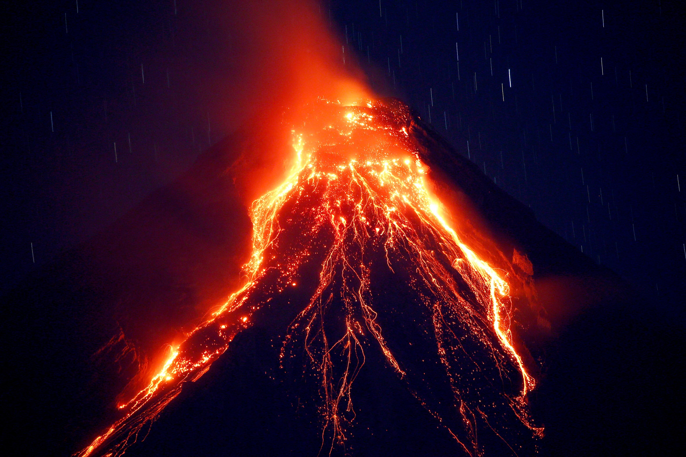
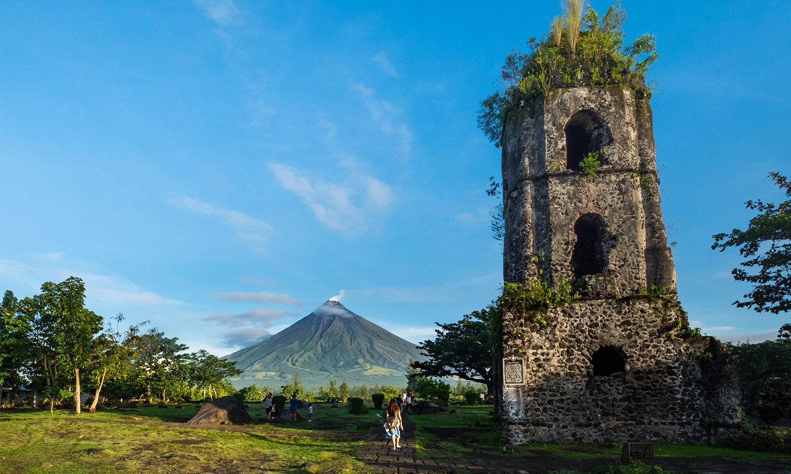
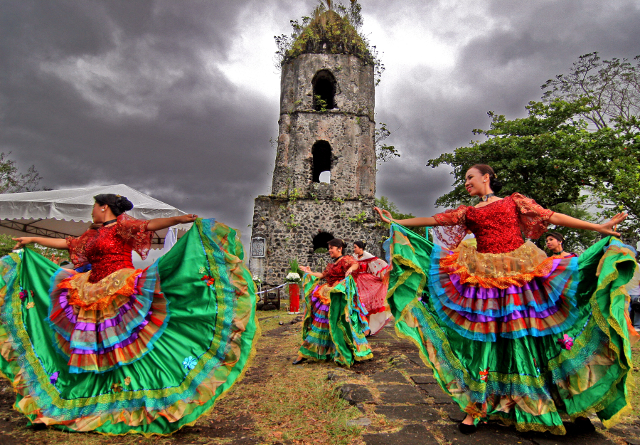

Mayon Volcano, located in the Bicol region of the Philippines, is renowned for its perfect cone shape and is one of the most active volcanoes in the country. Standing at 2,462 meters (8,077 feet), its stunning beauty attracts tourists and researchers alike. With over 50 recorded eruptions, Mayon has shaped both the landscape and the lives of surrounding communities, enriching the volcanic soil that supports local agriculture. Culturally significant to the Bicolano people, Mayon features prominently in local legends and festivals.
Mayon is one of the Philippines' most active volcanoes, having erupted over 50 times. Its eruptions are often characterized by lava flows and explosive activity.
With its stunning symmetrical cone, Mayon attracts visitors for its breathtaking views and hiking opportunities, especially at the Mayon Volcano Natural Park.
Mayon holds cultural significance for the local Bicolano people, featuring in many local legends and stories passed down through generations.
